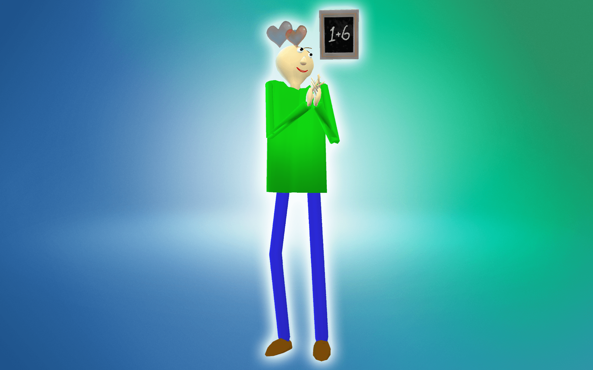

Baldi's Basics in Education and Learning CC for Sims 4
“Oh hi! Welcome to my Schoolhouse.”
This is a single item that is found in the full body section.
As the model for Baldi is very basic, some distortion may occur when he moves or performs certain actions.
Once your sim is wearing the Baldi outfit, their teeth will be floating in front of his head. Be sure to download the No Teeth Mod to remove the teeth.